Description : Un projet de BUT3 : Aménagement de l'emploi du temps ADE pour l'utilisation des professeurs.
Compétences utilisées :
Durant la SAE de BDD, nous avons du créer un site reprennant les tables de l'ADE actuel. Nous devions créé un site permettant l'utilisation spécifique des professeurs : AdeProf.
Les fonctionnalités de base que l’on peut y retrouver sont les suivantes :
- Affichage global de tous les cours sur l’histogramme entre le 1er septembre 2024 et la date actuelle
- Recherche d’un enseignant, sous barre de recherche et menu déroulant, pour accéder à sa page détaillée
- Filtrage en fonction de 2 dates données
- Informations liées à la recherche de l’enseignant:
Pour l’utilisation du site web, plusieurs prérequis sont nécessaires, parmis lesquels comptent:
- Un ordinateur pour interpréter le code du site, en passant par un navigateur web.
- Un serveur, qui assure le transfert des données vers l’interface web, afin de le rendre dynamique.
Pour l’installation du serveur, plusieurs méthodes sont possibles. Dans ce manuel d’utilisation, seulement deux de ces méthodes seront abordées.
Si une machine virtuelle est déjà installée sur le poste utilisé, un script, tel montré ci-contre, va lancer ce dispositif. Dans ce cas-ci, ce script devrait être présent sur le bureau du poste. Dès lors, double-cliquez dessus. Une fois cette étape effectuée, une page du navigateur choisie par défaut sur le poste va s’ouvrir, laissant apparaître un sablier. Cela indique que la machine virtuelle est activée. Une fois que cette étape est achevée, veuillez ouvrir un nouvel onglet sur le navigateur utilisé, puis écrire l’adresse IP 192.168.56.101 dans la nouvelle barre de recherche comme suit.
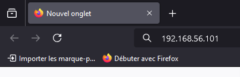Si aucune machine virtuelle n’est installée sur le poste utilisé, une solution alternative reste possible. Cela nécessite cependant l’utilisation d’une connexion internet. Par le biais de cette dernière, nous allons installer le logiciel XAMPP, qui pourra autant simuler un serveur qu’une machine virtuelle. Ce manuel ne traite que l’installation du logiciel XAMPP, mais d’autres logiciels existent tel que WampServer. Pour installer ce logiciel, veuillez vous rendre lien suivant "https://sourceforge.net/projects/xampp/files/XAMPP%20Windows/8.2.12/xampp-windows-x64-8.2.12-0-VS16-installer.exe" Une fenêtre de téléchargement va alors se lancer. Cliquez sur “Enregistrer” comme suit:
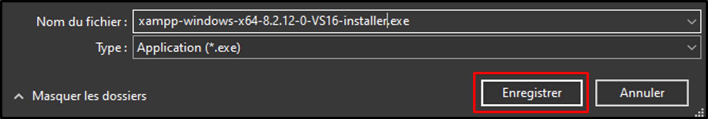Une fois le téléchargement terminé, double-cliquez sur cet installateur, qui se présente comme ci-dessous. À partir de cette étape, la connexion internet de votre poste n’est plus requise.
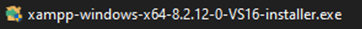Si une fenêtre similaire à celle-ci venait à apparaître, cliquez sur “OK”.
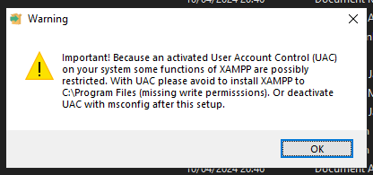Une nouvelle fenêtre d’autorisation d’accès du logiciel va alors s’ouvrir. Cliquez sur “Oui”. Maintenant que ces étapes ont été effectuées, l’installation du logiciel XAMPP peut débuter. Pour cela, un menu d’installation de XAMPP va se lancer. Cliquez sur “Next”.
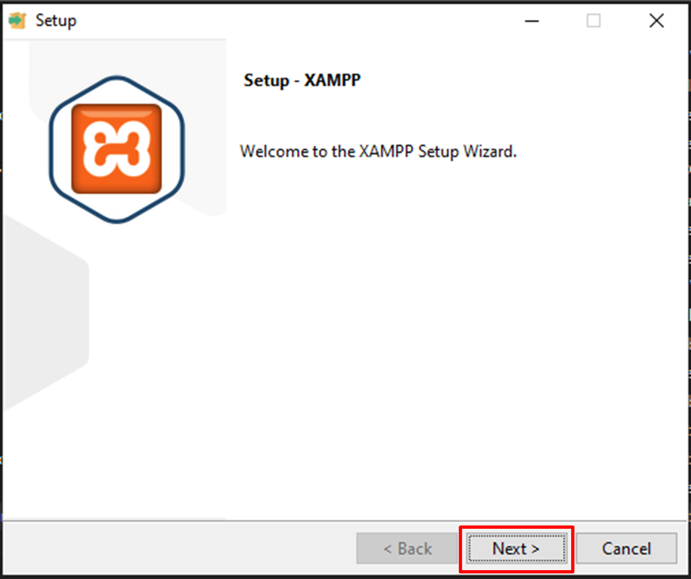Sur la fenêtre suivante, une liste est présente sur le côté gauche. Veuillez ne laisser cochées que les options “MySQL” ainsi que “phpMyAdmin”. Cliquez ensuite sur “Next”.
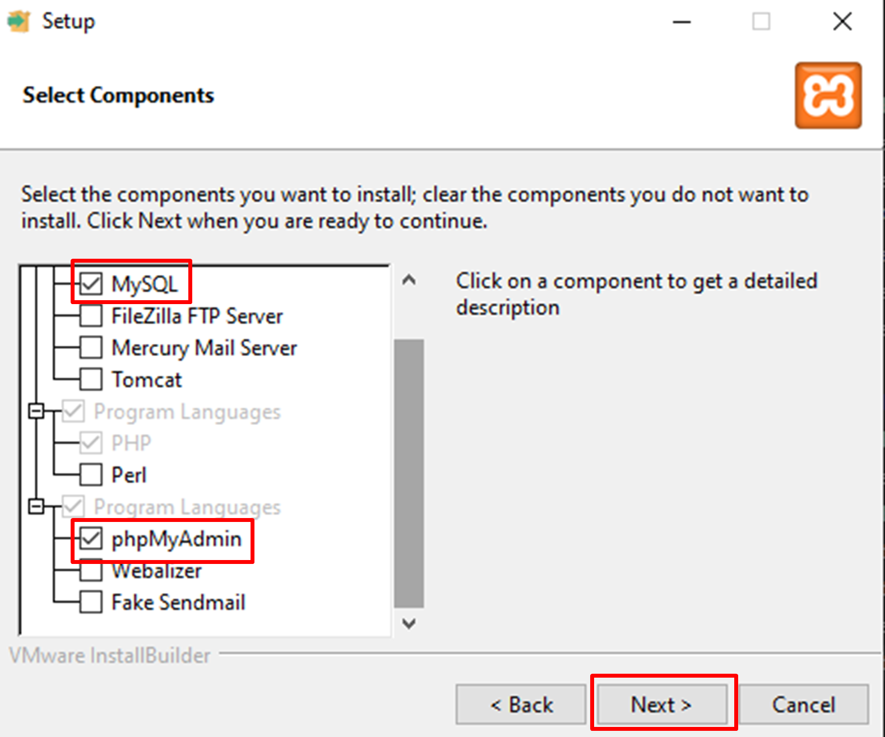Sur la fenêtre suivante, cliquez sur “Next”.
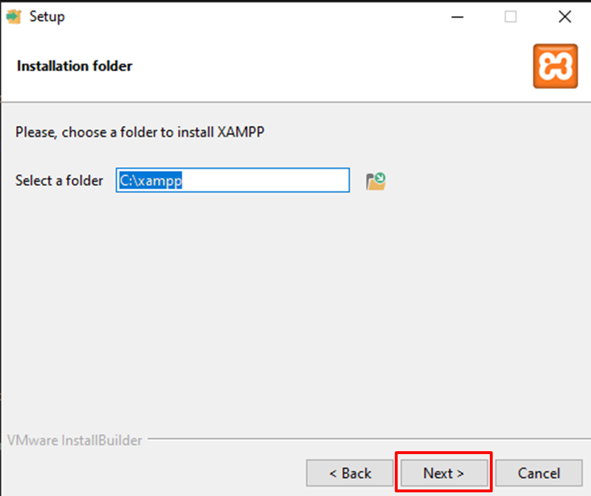Sélectionnez la langue du logiciel selon les besoins. Les deux choix disponibles sont l’anglais et l’allemand. Une fois que la langue désirée a été choisie, cliquez sur “Next”.
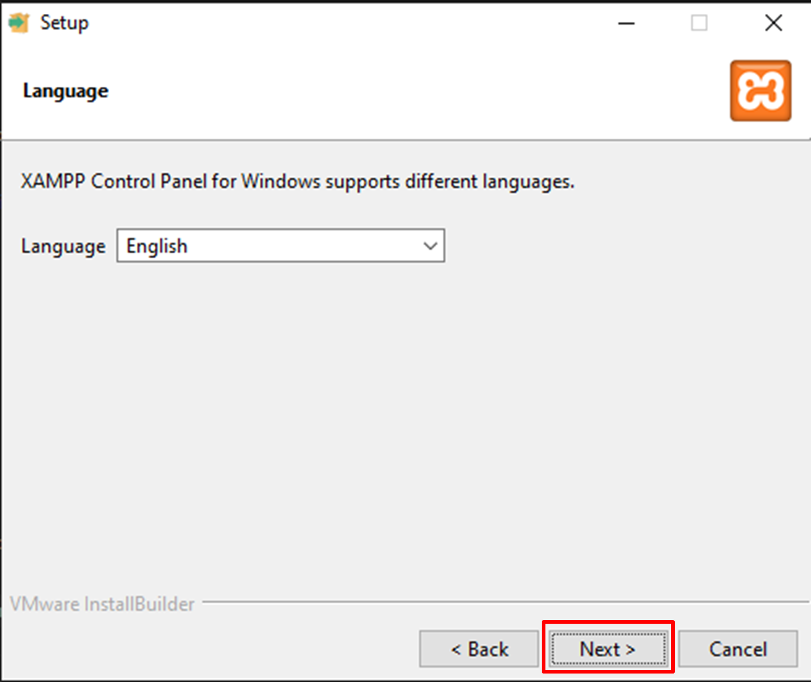Le téléchargement du logiciel XAMPP va alors débuter sur votre poste.
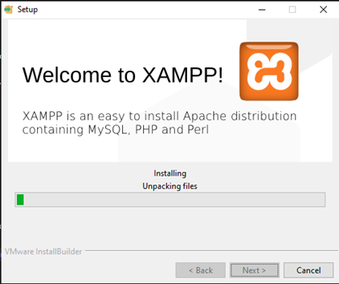Après que la barre de chargement précédente ait été complétée, il est très probable qu’une fenêtre d’alerte de sécurité s’ouvre. Si tel est le cas, il suffit de laisser cochées les options comme ci-dessous. Cliquez ensuite sur “Autoriser l’accès”.
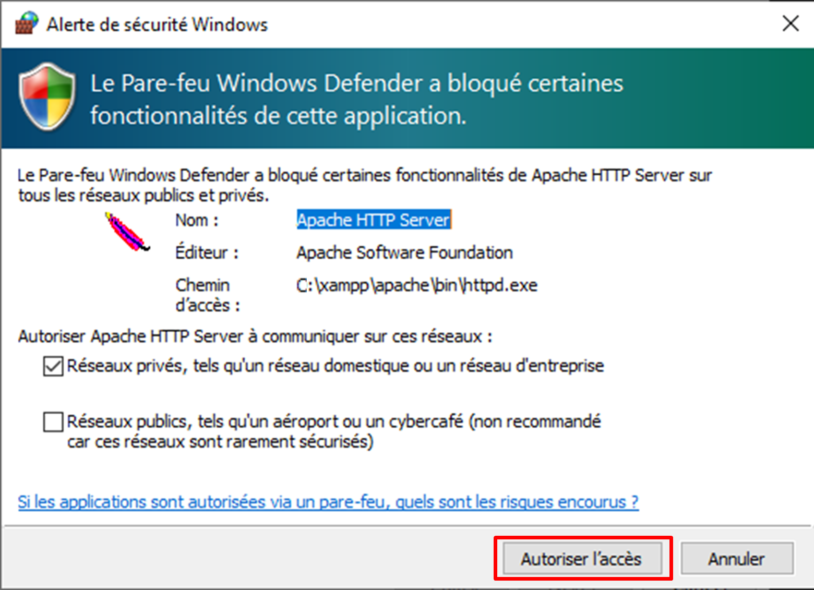Si la fenêtre suivante s’affiche, cela signifie que l’installation de XAMPP est désormais terminée. Veillez à laisser cochée l’option “Do you want to start the Control Panel now?”, puis cliquez sur “Finish”
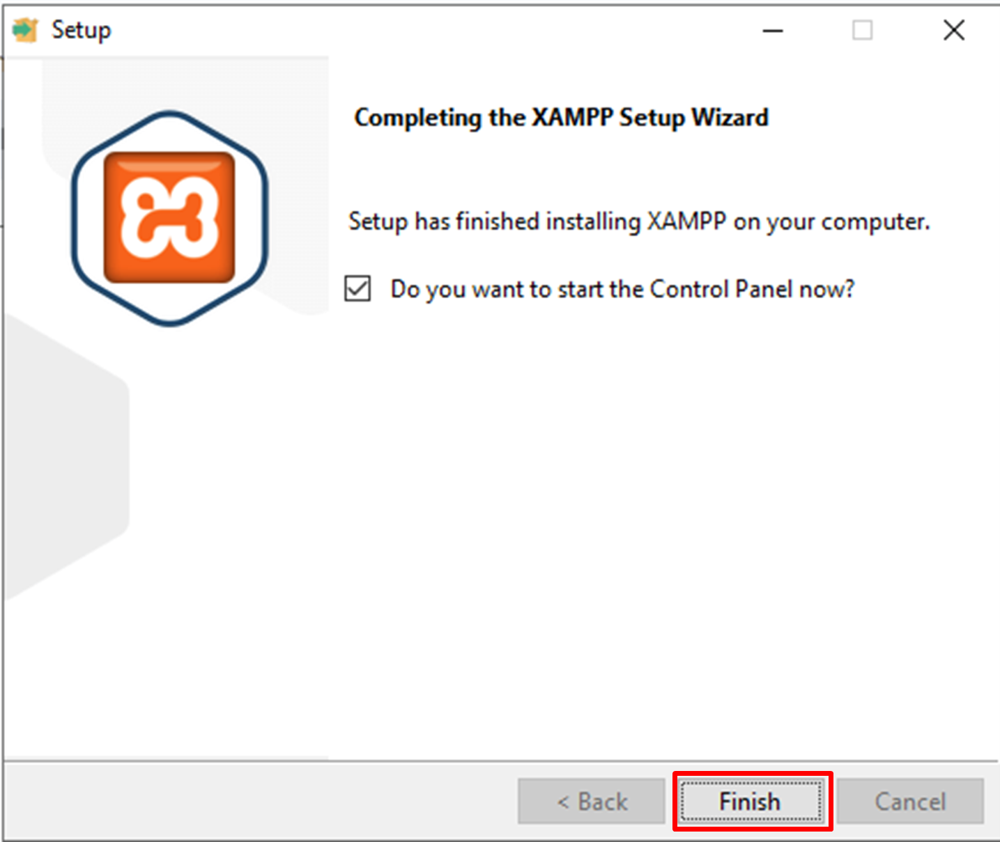La fenêtre suivante va alors s’ouvrir. Il s’agit du panneau de contrôle du logiciel XAMPP. Si vous désirez accéder à l’ensemble des fonctionnalités du site web, veillez à ce qu’il y ai les appellations “Stop” dans l’encadré rouge. Si ce n’est pas le cas, cliquez sur ces mêmes boutons encadrés en rouge (voir exemple ci-dessous).
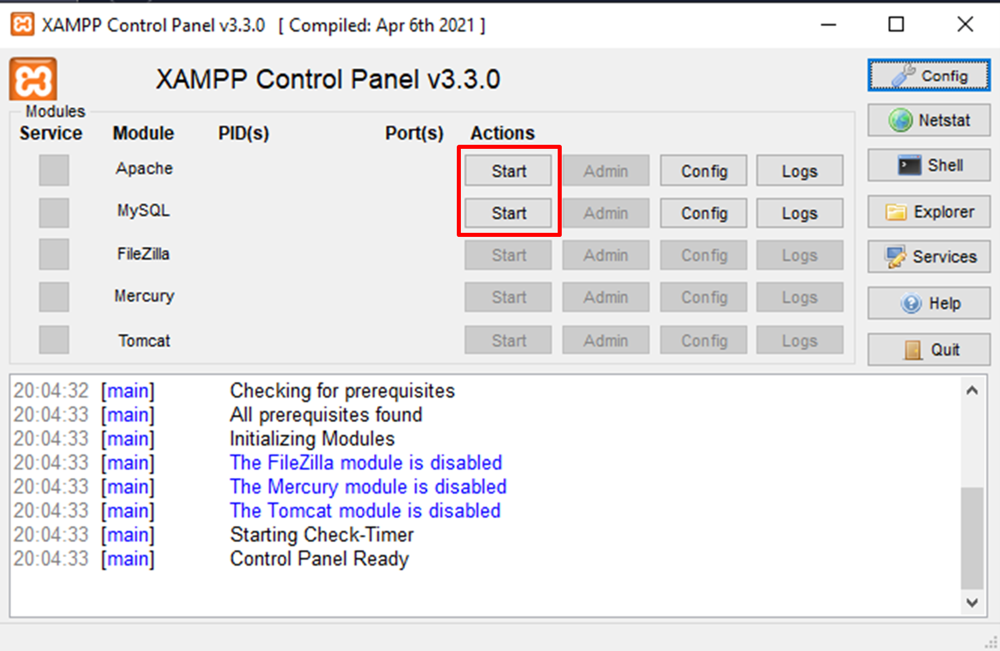Au moment de cliquer sur le bouton en face de l’option “MySQL”, une nouvelle fenêtre de sécurité peut se lancer. Tout en gardant les options cochées comme ci-dessous, appuyez sur “Autoriser l’accès”
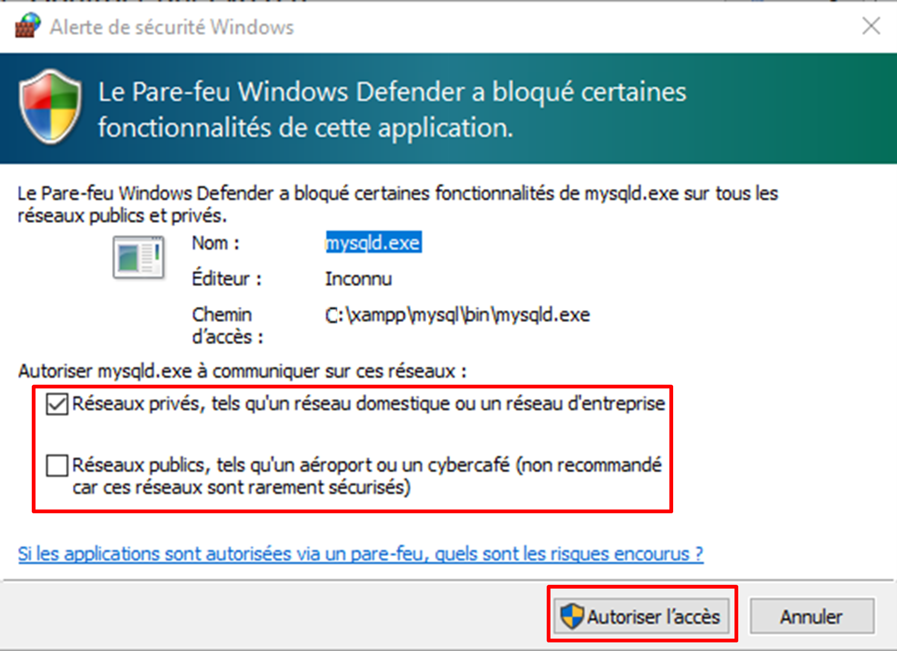Si les modules requis sont activés, vous devriez obtenir le panneau de contrôle de XAMPP qui se présente comme suit.
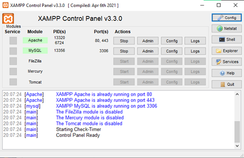Ci-dessus, si les options “Apache” ainsi que “MySQL” sont sur un fond rectangulaire de couleur verte, cela indique que tous les modules nécessaires au bon fonctionnement du site web sont fonctionnels.
L’importation de la base de données est également nécessaire au bon fonctionnement du site web. Pour ce faire, nous allons utiliser l’outil phpMyAdmin, disponible soit par la machine virtuelle, soit par XAMPP. Si vous utilisez XAMPP, ouvrez une nouvelle fenêtre dans votre navigateur. Dans la barre de recherche, inscrivez "https://localhost/dashboard/". Une redirection vers la page ci-dessous va avoir lieu. Cliquez sur “phpMyAdmin”.
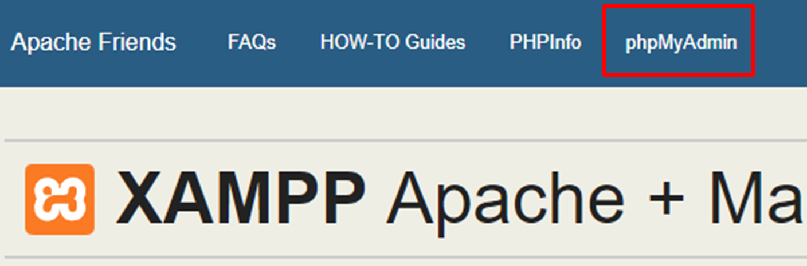Si vous utilisez la machine virtuelle, inscrivez http://192.168.56.101/phpmyadmin/ dans la barre de recherche de votre navigateur. Une autre redirection est alors effectuée vers la page web ci-dessous.
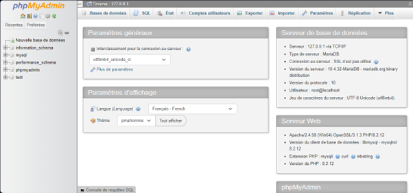Sur cette nouvelle page, cliquez sur “Nouvelle base de données”, comme visible ci-contre. 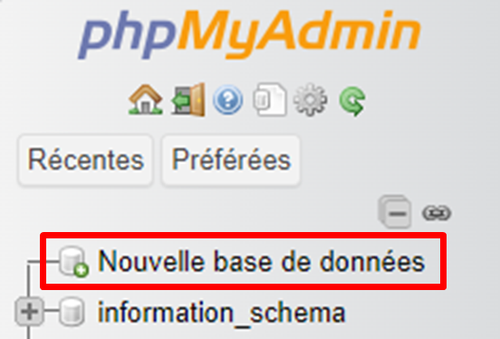
Ensuite, remplissez le champ encadré en rouge ci-dessous avec le texte “sae2024”. Veillez à noter exactement la même orthographe. Poursuivez le processus en cliquant sur “Créer”.
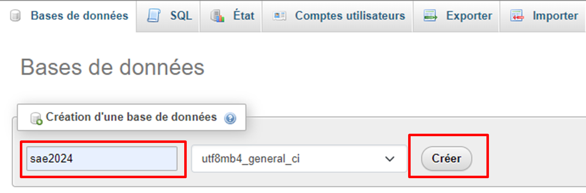Sur le menu à gauche de la page web, cliquez sur “sae2024”.
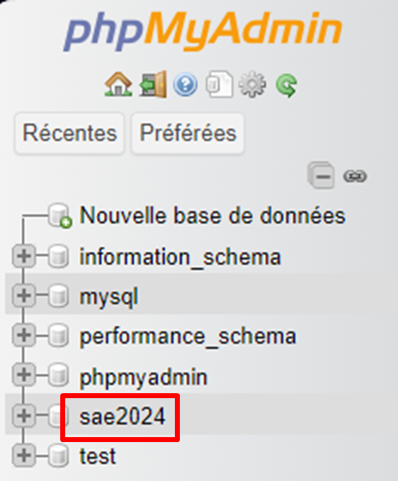Dans la fenêtre qui s’affiche, cliquez sur “Importer”, présent dans la barre latérale en haut du site.
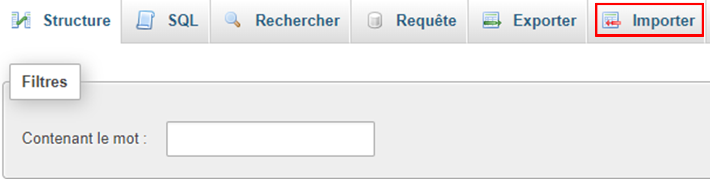Sur la partie de la page web présentée ci-contre, sélectionnez l’option “Choisir un fichier”. Ensuite, dans le dossier global du téléchargement du site AdeProf, sélectionnez le fichier “sae2024.sql”.
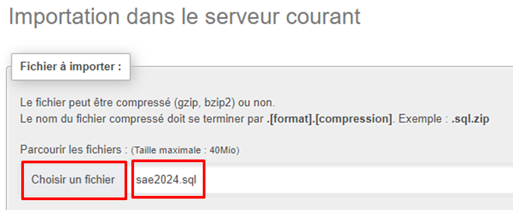Si le nom du fichier n’est pas renseigné dans le champ à compléter, veuillez réitérer l’opération. Dans le cas contraire, descendez en bas de cette même page, puis cliquez sur “Importer”.
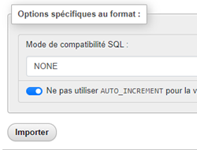Si le message ci-dessous s’affiche, la base de données du site a alors été correctement importée dans phpMyAdmin.
Si ce n’est pas le cas, cliquez sur “sae2024” présent sur la gauche du site web, dans la liste.
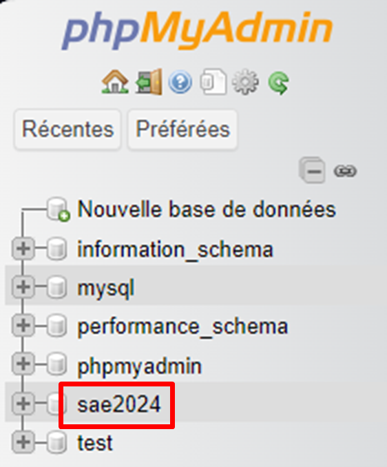Ensuite, allez dans l’onglet “Opérations” de la barre latérale en haut du site, puis descendez sur la page jusqu’à apercevoir l’option “Supprimer la base de données (DROP)”. Cliquez ensuite sur cette dernière.
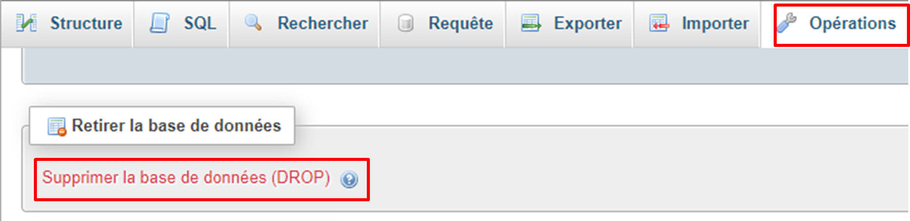Désormais, la base de données que vous aviez anciennement créée est maintenant effacée. Répéter maintenant le processus d’importation de la base de données depuis le début.
Pour l’utilisation de XAMPP, le dossier du site web doit être placé dans un emplacement spécifique. En allant dans votre explorateur de fichiers, tapez C:\xampp\htdocs dans la barre de recherche centrale, en haut. L’emplacement actuel dans l’explorateur est celui dans lequel vous devez placer le dossier du site .
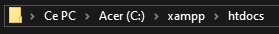Dans notre cas, déposez le dossier AdeProf, issu du fichier en format .zip, puis passez à l’étape de lancement du site web.
Pour lancer le site web depuis un navigateur, il vous suffit d’écrire l’URL suivante: "https://localhost/AdeProf/" . Cela vous emmènera directement sur la page d'accueil de notre site AdeProf. Vous devriez avoir votre visuel de site praticable pour l’utilisation.
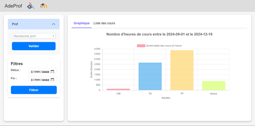L'installation du site est effective et le site est fonctionnel. Si j'avais à le refaire, je serai plus à l'aise avec le logiciel XAMPP qui était pour moi inconnu.